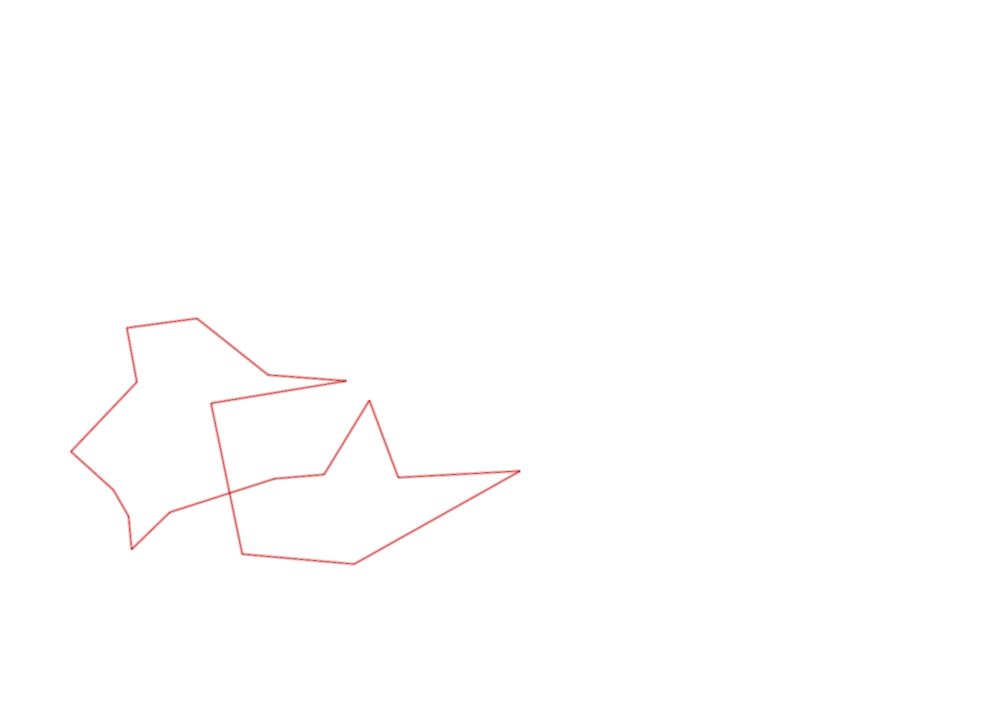
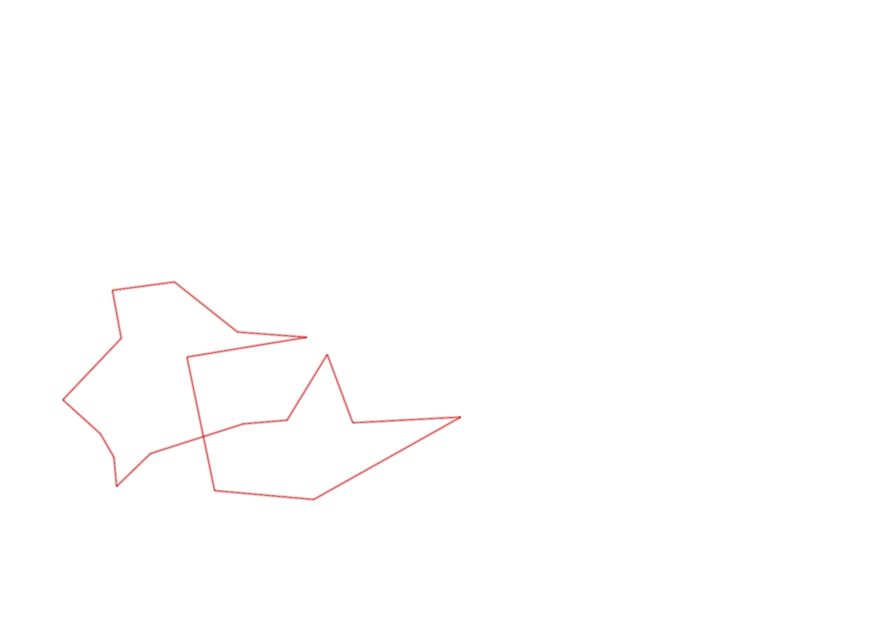

| Control |
Points |
Time Punched |
Distance |
Your Time |
Pace |
Place |
Fastest Time |
Median Time |
% Behind Fastest |
| 126 |
20 |
|
0.17 |
0:00:52 |
05:05 |
5 / 10 |
0:00:43 |
0:00:53 |
20% |
| 63 |
60 |
|
0.19 |
0:01:11 |
06:13 |
2 / 4 |
0:00:56 |
0:01:20 |
26% |
| 32 |
30 |
|
0.15 |
0:01:10 |
07:46 |
18 / 27 |
0:00:36 |
0:00:56 |
94% |
| 44 |
40 |
|
0.12 |
0:02:51 |
23:45 |
26 / 29 |
0:00:52 |
0:01:49 |
228% |
| 53 |
50 |
|
0.2 |
0:03:42 |
18:30 |
22 / 26 |
0:01:31 |
0:02:15 |
143% |
| 69 |
60 |
|
0.12 |
0:01:58 |
16:23 |
24 / 29 |
0:00:45 |
0:01:18 |
162% |
| 71 |
70 |
|
0.06 |
0:03:00 |
50:00 |
24 / 25 |
0:00:48 |
0:01:13 |
275% |
| 40 |
40 |
|
0.07 |
0:02:58 |
42:22 |
6 / 9 |
0:00:40 |
0:01:52 |
345% |
| 41 |
40 |
|
0.11 |
0:01:14 |
11:12 |
11 / 20 |
0:00:28 |
0:01:07 |
164% |
| 60 |
60 |
|
0.23 |
0:03:57 |
17:10 |
4 / 4 |
0:01:55 |
0:02:33 |
106% |
| 38 |
30 |
|
0.11 |
0:00:56 |
08:29 |
4 / 15 |
0:00:00 |
0:01:15 |
-% |
| 127 |
20 |
|
0.18 |
0:02:56 |
16:17 |
3 / 3 |
0:01:41 |
0:02:33 |
74% |
| 42 |
40 |
|
0.17 |
0:05:28 |
32:09 |
20 / 20 |
0:01:06 |
0:01:52 |
396% |
| 37 |
30 |
|
0.26 |
0:06:10 |
23:43 |
8 / 9 |
0:02:45 |
0:03:57 |
124% |
| 61 |
60 |
|
0.4 |
0:06:42 |
16:45 |
2 / 2 |
0:04:07 |
0:05:24 |
62% |
| 59 |
50 |
|
0.24 |
0:03:47 |
15:45 |
18 / 19 |
0:01:47 |
0:02:30 |
112% |
| 130 |
30 |
|
0.33 |
0:05:31 |
16:43 |
1 / 1 |
0:05:31 |
0:05:31 |
0% |
| Finish |
0 |
|
0.29 |
0:02:17 |
07:52 |
3 / 4 |
0:01:38 |
0:02:01 |
39% |
Total Distance Covered: 3.4km
Points Scored: 730
Late Penalty: 0
Final Score: 730
Total Time: 0hours 56minutes 40seconds
Efficiency: 214.71 points/km
 
